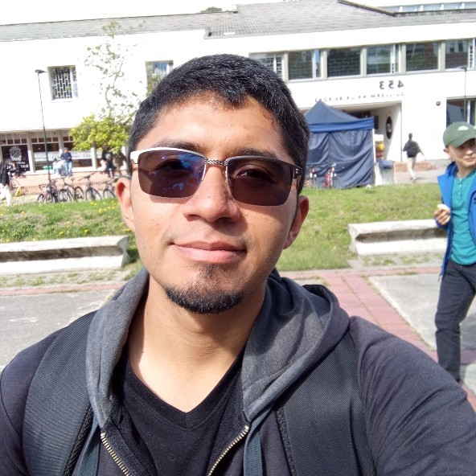

Durante el curso me dediqué a identificar el proceso de la línea de producción y desarrollar un plan coherente para su mejora por medio de softwares como Technomatix Plant Simulation y Digital Factory. Lo anterior me llevó al desarrollo más coherente de procesos de supervisión por medio de SCADA. Mi labor de dirección permitió que el equipo agilizará procesos ante retrasos inoportunos

A lo largo de la asignatura fue aprendiendo sobre la gestión y logística necesaria para desarrollar una libreta de producción optimizando los set up e implementando estrategias de robotización en las etapas más viables. Además, esto me permitió realizar un análisis de la productividad de una planta y estimar sus tiempos de mejora. Por otro lado, fue de suma utilidad el diseño del gemelo digital para hacer probar la mejora de takt time en las diferentes etapas y acercar más a la realidad los cálculos hechos.
Destaco la importancia del curso para las aplicaciones que como ingenieros en la vida laboral vamosa tener. Nos ha permitido comprender cómo gestionar y realizar un proyecto integrador de los conocimientos adquiridos en la ingeniería mecatrónica, con el objetivo final de desarrollar un proceso de manufactura automatizado. Este enfoque no solo tiene que ver con la operación de las plantas, sino también con la gestión, planificación y supervisión de los procesos.
Lo más relevante de este proyecto es que nos prepara para desempeñarnos en áreas clave como la gestión de equipos y la optimización de procesos, lo cual es fundamental para fomentar la aspiración de los estudiantes de mecatrónica de la universidad a ocupar grandes cargos. Este tipo de formación abre la puerta para que podamos no solo integrarnos en equipos de trabajo en grandes empresas, sino también para desarrollar y crear nuestros propios proyectos en el futuro.
Se entiende y se estima el espíritu integrador del curso. Se valora pues entiendo la importancia de esta cualidad en el perfil profesional del Ingeniero Mecatrónico. En ese sentido sí sentí los resultados de aprendizaje de la mayoría de los objetivos del curso. Especialmente en la gestión de automatización, especificidades que no había estudiado previamente de IIoT, PLCs y SCADA, y especialmente la integración de estas herramientas tan técnicas en una dimensión económica y financiera.
Sin embargo, siento que hay elementos estructurales del curso que dificultan fuertemente estos resultados. Muchos módulos se sintieron aislados y sobre todo no se sintió parejo el esfuerzo durante el desarrollo del curso.